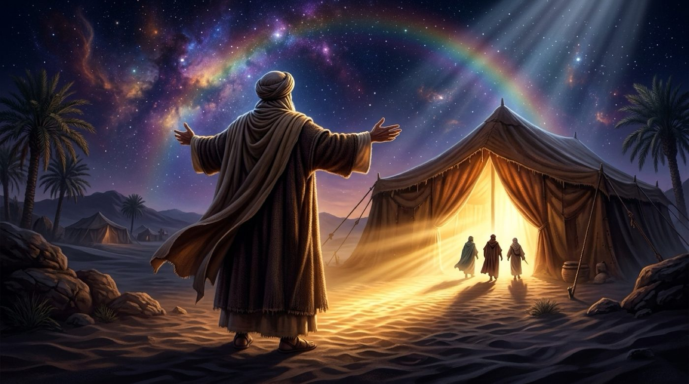
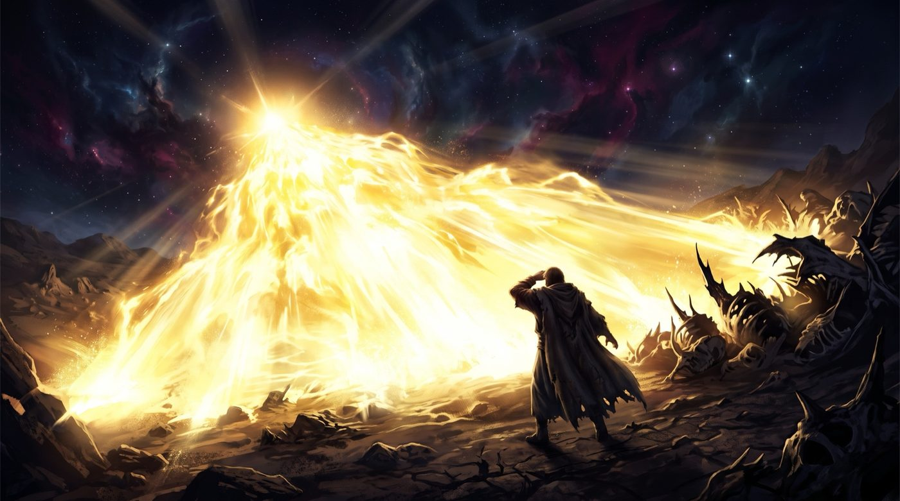
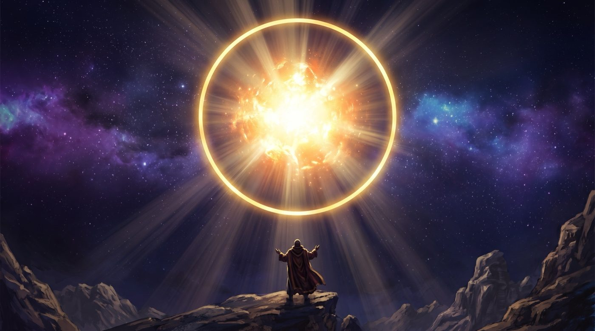
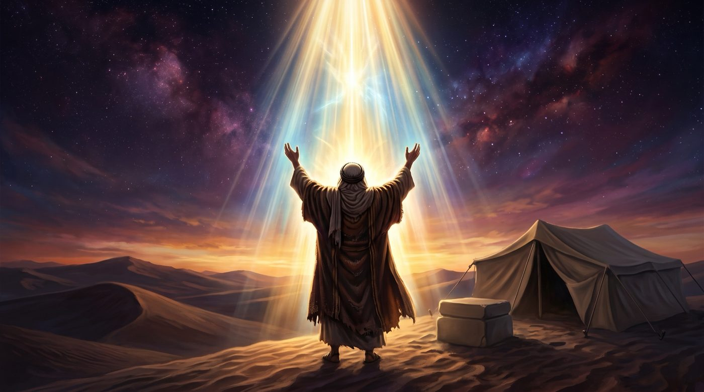
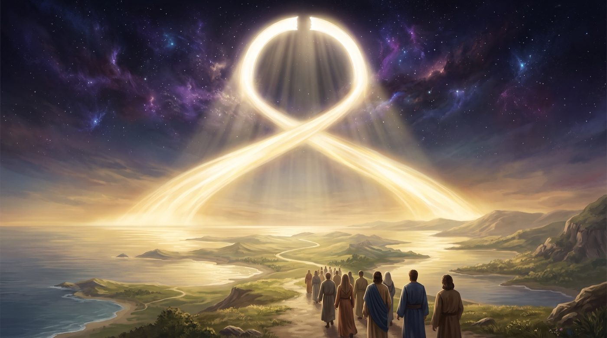

Le 'Hessed perdu
Pourquoi la Torah efface les soixante-quinze premières années d'Avraham, comment le 'Hessed, le premier des attributs, pouvait avaler le monde entier, et par quel Nom le Ciel a dû lui dire « assez » pour qu'une bonté sans mesure devienne le socle d'un peuple.
La paracha de Le'h Le'ha s'ouvre sur un ordre de départ, adressé à un homme dont nous ne savons presque rien. « וַיֹּאמֶר ה' אֶל אַבְרָם לֶךְ לְךָ מֵאַרְצְךָ וּמִמּוֹלַדְתְּךָ וּמִבֵּית אָבִיךָ » (Bereshit 12:1), « Hachem dit à Avram : va vers toi-même, hors de ton pays, de ta patrie et de la maison de ton père ». Le récit prend Avram à soixante-quinze ans, au moment où la voix se fait entendre, et passe sous silence tout ce qui précède.
La Torah, qui compte les années de Noa'h et décrit les générations une à une, laisse dans l'ombre les deux cinquièmes d'une vie : l'enfance d'Avram, ses combats, la lente construction de sa croyance. Un homme surgit tout fait, déjà porteur d'une mission, et le texte se garde de nous dire comment il l'est devenu. Nos maîtres se sont tous arrêtés sur cette omission, et chacun s'interroge : pourquoi la Torah tait-elle les années où cet homme s'est construit, et qui était donc ce personnage hors normes ?
Le Midrach, lui, raconte ces années sans complaisance, et décrit un homme qui interroge le monde, qui se trompe parfois et erre souvent, qui remonte de cause en cause jusqu'à la Cause des causes, et c'est Elle qui, finalement, le trouve, lorsque le Maître de l'édifice se penche à la fenêtre. « Rabbi Its'hak dit : cela ressemble à un homme qui passait d'un lieu à un autre, et qui vit un palais illuminé. Il dit : est-il possible que ce palais soit sans maître ? Le maître du palais se pencha vers lui et lui dit : c'est moi le maître du palais » (Bereshit Rabba 39:1). Avram voit une bira doleket, une demeure éclairée dans la nuit, et il en déduit qu'une telle lumière a forcément quelqu'un pour la tenir.
Un homme marche seul dans l'obscurité, un simple passant sur une route, il aperçoit une bâtisse allumée, et, saisi par une clarté qu'il ne s'explique pas, il s'arrête et pose la seule question qui compte. La foi d'Avram naît là, sur le bord du chemin, d'un émerveillement qui devient question. Voilà l'homme que la Torah a choisi comme premier patriarche, et dont pourtant elle tait l'histoire.
L'énigme se double d'une autre, car ce même Avram, une fois choisi, la tradition le rend, presque sans pudeur, responsable de quelques-uns de nos plus lourds malheurs. Le Talmud enseigne que l'un de ses doutes, une seule question mal posée, aurait suffi à décréter l'exil de ses descendants. Comment l'homme du palais illuminé, celui qui a deviné le Maître dans la lumière, peut-il aussi être celui par qui l'exil est entré dans l'histoire ?
Avec l'aide du Ciel et de nos maîtres, nous verrons pourquoi la Torah efface le début de sa vie, et ce que l'équilibre du 'Hessed exige de notre propre manière d'aimer.
• Avraham, l'incarnation du 'Hessed
• Le 'Hessed rend aveugle
• Circonscrire le 'Hessed
• Circoncire le 'Hessed
• Choisir un 'Hessed de vérité
• La terre remplie du 'Hessed de vérité
Pour comprendre pourquoi la Torah tait l'enfance d'Avraham, il faut d'abord saisir ce qu'il vient représenter. La tradition voit en lui le premier homme capable d'incarner une mida, un attribut divin, et la première de toutes : le 'Hessed, la bonté.

La mystique enseigne que la lumière infinie, trop haute pour le monde, l'atteint à travers sept attributs inférieurs, les sept midot, que le Malbim compare aux sept couleurs de l'arc-en-ciel : la lumière du soleil, une en elle-même, se divise en sept couleurs en traversant le nuage léger, et de même la lumière divine, une à sa source, se divise en sept midot en rencontrant les mondes (Malbim sur Bereshit 9:16). Le Sfat Emet le rattache au Zohar : les couleurs de l'arc correspondent aux patriarches, qui ont fait passer ces attributs de la puissance à l'acte, mikoa'h el hapoal, et chacun d'eux incarne une mida. Avraham est le premier, et le premier des attributs est le 'Hessed, comme le prophète le dit en toutes lettres : « תִּתֵּן אֱמֶת לְיַעֲקֹב חֶסֶד לְאַבְרָהָם » (Mi'ha 7:20), « tu donneras la vérité à Yaakov, le 'hessed à Avraham ». Le nom même du patriarche et le nom de l'attribut sont, dans la tradition, une seule et même chose.
Le 'Hessed est le premier des attributs car il est la bonté qui donne la première, l'amour qui précède le mérite. Le Zohar l'appelle le bras droit de l'émanation divine, tendu vers le monde, et le premier des jours, qui accompagne tous les autres. Tout commence par le don, et la création elle-même, disent nos maîtres, fut un acte de pur 'hessed, un monde bâti pour que le Bien se déverse gratuitement sur les créatures. Olam 'hessed yibane, « le monde se construit par la bonté » (Tehilim 89:3).
Avraham vit ce 'hessed dans sa propre vie : il aime D.ieu et Ses créatures d'un même amour, et aimer, pour lui, et c'est l'essence de la terminologie, c'est vouloir connaître. Le Rambam raconte qu'Avraham, encore enfant, « commença à chercher dans sa pensée » jour et nuit comment la sphère céleste pouvait tourner sans cesse sans personne pour la conduire, jusqu'à savoir qu'il existe un seul D.ieu qui conduit le monde et qui a tout créé (Hilkhot Avoda Zara 1:3) ; son amour garde la marque de cette quête, car il veut connaître celui qu'il aime et le faire connaître à son tour. Il ouvre sa tente aux voyageurs pour connaître leur besoin, les nourrit, les abreuve et leur enseigne qu'il existe un Créateur à remercier, afin qu'eux aussi apprennent à Le connaître. Il prend les armes pour délivrer son neveu tombé aux mains des rois, il plaide devant le Ciel pour arracher les justes de Sodome à la destruction, et il accepte même de se circoncire à quatre-vingt-dix-neuf ans. Chacun de ces gestes est du 'hessed pur, donné sans compter, car il n'y a pas d'amour sans preuves d'amour, nous apprend Avraham.
À telle enseigne que cette bonté se retrouve même dans un nombre : la tradition compte deux cent quarante-huit mitsvot assé, les « tu feras » qui poussent l'homme à agir. Et elle remarque que ce nombre, deux cent quarante-huit, est la valeur numérique du nom אברהם, Avraham. Le Zohar l'enseigne : les commandements positifs découlent de la racine spirituelle d'Avraham, l'homme de la bonté active, car la mida de 'hessed pousse à donner, à sortir de soi vers le monde. Le corps humain compte d'ailleurs, dit la même tradition, deux cent quarante-huit membres, autant que ces commandements et que les lettres du nom d'Avraham, et chaque membre de l'homme correspond ainsi à un commandement positif.
On comprend alors le silence de la Torah sur ses premières années, puisque Avraham est donné comme l'incarnation d'un principe, la porte par laquelle le 'Hessed entre dans l'histoire, et le texte nous le montre dès le premier verset comme un attribut incarné, déjà tout entier ce qu'il est, ou presque car il lui faudra encore de nombreuses épreuves dont l’épreuve ultime, le sacrifice d’Itshak.
Avraham est le premier des attributs divins devenu chair : la bonté qui donne avant tout mérite, entrée dans l'histoire sous les traits d'un homme.
Le 'Hessed est le plus lumineux des attributs, mais nos maîtres nous mettent en garde : la bonté, l'amour de l'autre, peuvent devenir dangereux et même néfastes. La lumière qui éclaire tout sans distinction finit par aveugler.

Nous le savons tous, et l'histoire des hommes en témoigne : elle déborde de meurtres commis par passion, de guerres menées au nom de l'amour d'une cause ou d'un dieu, de gens prêts à justifier l'injustifiable par attachement. Les pires horreurs de l'humanité ont parfois été commises au nom de l'amour, et celui qui excuse tout par amour finit par nourrir le mal qu'il voulait combattre.
La tradition en donne une lecture à propos du fils aîné d'Avraham, Ichmaël, en qui nos Sages voient le fruit d'un 'hessed mal canalisé, d'une générosité si large qu'elle en perd toute pudeur. Le Midrach lit le surnom que l'ange lui donne, pere adam, « un homme sauvage » (Bereshit 16:12), comme la marque d'un être débridé, livré à ses passions. La bonté d'Avraham, perçue par le fils comme une bienveillance sans aucune limite, aurait ouvert la porte à ce débordement et fait d'Ichmaël ce pere adam.
Sur un autre registre, la Torah va jusqu'à employer le mot lui-même pour nommer un interdit, et quand elle défend à un homme d'épouser sa sœur, elle écrit « וְרָאָה אֶת עֶרְוָתָהּ... חֶסֶד הוּא » (Vayikra 20:17), « il verra sa nudité... c'est un 'hessed ». Le mot de la plus haute vertu désigne ici une des pires transgressions imaginable, et la Torah nous apprend ainsi que le 'hessed débordant, l'intimité sans loi, peut devenir une faute.
Le Midrach nous avertissait déjà : « kol hana'assé ra'haman al ha'a'hzarim, sofo she'na'assé a'hzari al hara'hamanim », « celui qui se montre miséricordieux envers les cruels finira par se montrer cruel envers les miséricordieux » (rapporté au nom de Rabbi Elazar, Tan'houma Metsora 1). La miséricorde offerte au bourreau se paie tôt ou tard par la souffrance de l'innocent, et le 'hessed sans discernement laisse le mal prospérer.
Dans la mystique, de nombreux maîtres, le Chla, le Sod Yesharim (passage sur Pourim), enseignent que du côté du 'Hessed, dont Avraham est le char (le véhicule humain qui incarne cet attribut), est sorti Ichmaël, et que les kelipot, ces « écorces » impures qui enveloppent la sainteté, trouvent prise jusque dans la bonté : un 'Hessed peut donner sans mesure, sans Guevoura, sans règles, et donner indistinctement, et ses dons peuvent donner jusqu'aux kelipot. Cette bonté nourrit alors les forces négatives autant que la sainteté, et crée une grande confusion dans le monde spirituel : le bien et le mal se mélangent, l'ordre divin s'obscurcit. Nos maîtres relient cet état au safek, le doute qui s'installe quand la lumière de la bonté éclaire aussi ce qui aurait dû rester dans l'ombre. Ils remarquent qu'Amalek, figure du mal dans la Torah, a pour valeur numérique deux cent quarante, comme le mot safek, et ils en tirent que le doute destructeur provient d'une confusion entre le bien et le mal.
Une bonté que rien ne retient nourrit indistinctement la lumière et les écorces, elle brouille la frontière du juste et de l'injuste, et la vertu la plus haute, laissée sans mesure, se retourne en danger.
Si le 'Hessed débordant menace le monde, alors il doit être contenu, et le Ciel intervient avec une patience infinie pour recentrer la bonté d'Avraham, la circonscrire et emmener notre patriarche à bon port. Pour cela, D.ieu se présente à lui sous le Nom de Celui qui a dit au monde « assez ».

À la lecture du texte, nous constatons que D.ieu s'introduit dans la vie d'Avraham avec une grande parcimonie, presque au compte-gouttes, et avec des mots mesurés. Le Ciel fait preuve de pédagogie et de patience face aux errances du patriarche : Il le bénit, Il le protège, Il le redirige, et Il va jusqu'à bénir Ichmaël pour répondre à la prière d'Avraham. Dès les premiers mots de la paracha, Il le recentre d'ailleurs sur lui-même, par ce le'h le'ha que nos maîtres lisent « va vers toi-même », rentre en toi, quitte la dispersion pour retrouver ton centre, car la correction humaine commence par un retour à soi.
Lorsque Avraham reçoit la toute première mitsva de l'histoire, la circoncision, le Ciel se présente sous un Nom précis : « אֲנִי אֵ-ל שַׁדַּי » (Bereshit 17:1), « je suis El Chaddaï ». Le Talmud l'explique au nom de Rech Lakich : « ani hou she'amarti la'olam dai », « c'est moi qui ai dit au monde : assez » ('Haguiga 12a). Au moment de la création, enseigne-t-il, le monde s'étendait, s'étendait sans fin, jusqu'à ce que le Saint, béni soit-Il, le rabroue et l'arrête, d'où le Nom Chaddaï, she'amar dai, celui qui a dit « assez ». Le Nom même par lequel D.ieu a arrêté l'expansion du monde est donc celui sous lequel Il vient arrêter l'expansion du 'hessed d'Avraham.
La création aussi fut un débordement, une lumière qui se répandait sans mesure, et il a fallu un « assez » pour qu'un monde tienne debout. Cette limite, le point où l'expansion s'arrête et où une forme devient possible, permet au monde d'exister, et le même principe vaut pour la bonté. Un 'hessed infini devient un déluge qui emporte tout. Pour qu'il devienne fécond, il faut qu'une voix lui dise « assez », et le Nom Chaddaï est cette voix : il endigue le 'hessed d'Avraham et, par-là, le sauve.
Un enseignement transmis par mon père שיחיהéclaire encore ce Nom : Chaddaï, composé du chin, du dalet et du youd, a pour valeur numérique trois cent quatorze, les trois premiers chiffres du nombre pi Π , qui permet de calculer la circonférence d'un cercle. La correspondance, remarquée bien avant la mathématique moderne, illustre l'idée de circonscription : comme pi définit la limite exacte d'un cercle, le Nom Chaddaï définit la limite de l'expansion divine. Le cercle est la figure de ce qui est contenu, et ce Nom contient de la même façon le monde et le 'hessed.
Ce recentrement, le Ciel l'inscrit jusque dans le nom du patriarche : Il ajoute une lettre, un hé, et Avram devient Avraham ; or la tradition enseigne que ce hé est celui-là même de la création, i.e. la lettre par laquelle les mondes furent faits. En recevant cette lettre, la bonté d'Avram devient une puissance ordonnée, arrimée à la loi de la création, le 'Hessed d'Avraham devient une lumière qui a reçu sa mesure.
Le Nom sous lequel le Ciel corrige Avraham est celui qui dit « assez » : le même « assez » qui a arrêté l'expansion du monde vient arrêter l'expansion de sa bonté, car le 'hessed a besoin de limites, comme le monde a besoin de frontières, pour tenir debout.
Le Ciel dit « assez », et aussitôt Il demande un signe équivalent à l’homme : la première mitsva de l'histoire est une entaille, une marque gravée dans le corps même d'Avraham. Avec la brit mila, la circoncision, la mesure s'inscrit dans la chair, et le 'hessed qui débordait est désormais borné à l'endroit précis d'où naîtra la descendance.

Si le Ciel demande une transformation du corps, c'est que le 'hessed d'Avraham était une force vitale, un élan de vie qui débordait de lui vers le monde. Pour le canaliser, il fallait agir à la source de cette vie, à l'endroit d'où elle se transmet aux générations, et la circoncision limite l'élan vital en son lieu même, elle le consacre et l'oriente vers une fin : bâtir un peuple et lui transmettre la vérité. Nous comprenons dès lors le sens profond de la circoncision : canaliser le 'hessed d'Avraham et le concentrer sur Its'hak, l'héritier par lequel passera l'histoire.
Plus encore, le Chla rapporte, d'après les gloses du Ma'arekhet HaElokout, que le corps de l'homme peut former, à lui seul, les lettres du Nom Chaddaï : la tête et les deux bras levés vers le ciel dessinent le chin, un bras étendu dans sa largeur pendant que l'autre repose dessine le dalet, et le Ari Z"L enseigne que par la brit mila, quand la peau est retournée et que se dévoile la couronne, apparaît le youd, « le petit sceau » du Nom Chaddaï (Likoutei Torah, Le'h Le'ha). Le Nom Chaddaï est donc écrit dans le corps même d'Avraham, et l'homme circoncis porte dans sa chair le Nom de la mesure, qui contient désormais sa bonté.
Ce même Nom, nous l'inscrivons aujourd'hui à l'extérieur des parchemins de nos mezouzot, fixés aux portes de nos maisons, et là encore il s'agit de circonscrire. Par ce Nom, nous traçons une frontière autour de notre maison, nous la séparons du monde profane et nous y introduisons davantage de sainteté. Et c'est encore lui que la main droite dessine lors de la lecture du Chema : les trois doigts du milieu forment le chin, le pouce plié le dalet, l'auriculaire le youd. À chaque seuil et à chaque prière, nous retraçons ainsi le Nom de la limite, car c'est en délimitant un espace que l'on y fait entrer la sainteté.
Reste à entendre ce que la circoncision enseigne de l'amour lui-même : un amour vrai est une force qui accepte une limite pour devenir féconde. Nous le savons avec nos enfants : le parent qui aime sait dire non et poser un cadre qui fait grandir l'enfant. La brit mila grave dans la chair cette vérité, que nous avons tant de mal à admettre puisqu'elle renseigne sur les bontés non révélées du Créateur à notre égard : la bonté la plus haute est celle qui accepte de se limiter. La tradition relie encore cette vérité à la parole, puisque la brit fait aussi référence à l'alliance de la langue, celle des mots justes que l'on choisit pour construire, instruire, éduquer et ramener vers D.ieu, et circoncire le 'hessed, c'est aussi apprendre à mesurer sa parole.
La circoncision fait passer la mesure de l'idée à la chair : le Nom qui dit « assez » s'inscrit dans le corps même de l'homme, et le 'hessed qui débordait se trouve enfin borné là où naît la vie, orienté vers un peuple à bâtir.
Maintenant que nous avons analysé le personnage d'Avraham et les limites de la vertu qu'il incarne, revenons à notre question initiale : pourquoi le Ciel a-t-il choisi Avraham, cet homme en proie au doute dont la bonté même menaçait de tout confondre ? La réponse est surprenante : le Ciel l'a choisi avec son 'hessed excessif et ses errances, pour faire de lui le premier homme dont la bonté, d'abord sans mesure, deviendrait une bonté vraie, délimitée par la rigueur et par la loi.

Revenons aux doutes d'Avraham : lorsque le Ciel lui promet la terre, il demande « בַּמָּה אֵדַע כִּי אִירָשֶׁנָּה » (Bereshit 15:8), « à quoi saurai-je que j'en hériterai ? ». Le Talmud enseigne que cette question, cette exigence de savoir posée à la promesse divine, fit décréter l'exil d'Égypte, racine de tous les exils d'Israël (Nedarim 32a). Plus tard, quand le Ciel annonce la naissance d'Its'hak, Avraham tombe sur sa face et rit en son cœur (Bereshit 17:17), un rire que Rachi, à la suite d'Onkelos, lit comme une joie, puisque Avraham « crut et se réjouit », et lorsqu'il implore pour la survie d'Ichmaël, il pense encore, selon le Ramban, que l'héritier promis est ce fils déjà né, et il craint pour sa vie (Bereshit 17:18). Nos maîtres soulignent ces doutes pour nous montrer un patriarche qui cherche encore sa mesure, et dont la bonté apprend peu à peu ses bornes. La Torah ayant de nombreux niveaux d'interprétation, on pourrait bien sûr expliquer ces échanges tout autrement, et loin de nous l'idée de critiquer ce patriarche hors normes qui a fondé et diffusé la parole divine.
Or c'est précisément ce chemin qui fait la grandeur d'Avraham, et c'est en cherchant sa mesure qu'Avraham devient notre patriarche. Avraham part d'une bonté débordante, aveuglante, capable de plaider pour Sodome comme pour Ichmaël, et il apprend, sous la conduite patiente du Ciel, à la circonscrire. Sa transformation d'Avram en Avraham fait de lui un homme dont la bonté est désormais maîtrisée, canalisée, prête à devenir le fondement du peuple juif. Et c'est lors de l'annonce même de son élection que démarre cette transformation, par une élévation, quand le Ciel le fait sortir sous les étoiles : « הַבֶּט נָא הַשָּׁמַיְמָה וּסְפֹר הַכּוֹכָבִים » (Bereshit 15:5), « regarde vers le ciel et compte les étoiles ». Rachi comprend le « fit sortir » comme un geste d'élévation au-dessus des lois naturelles, par lequel Avraham est extrait des contraintes du monde et placé dans une dimension où la volonté divine prime sur la logique. Désormais, sa bonté obéira à la loi d'En-haut, celle de la volonté divine.
Le Zohar commente à ce propos le verset « אֵלֶּה תוֹלְדוֹת הַשָּׁמַיִם וְהָאָרֶץ בְּהִבָּרְאָם » (Bereshit 2:4), « telles sont les générations des cieux et de la terre lors de leur création ». Il y enseigne : ne lis pas behibaram, « lors de leur création », mais be'Avraham, « par Avraham », car c'est par Avraham que le monde se maintient (Zohar Le'h Le'ha, 86b). Les lettres de behibaram sont exactement celles d'Avraham, et le monde tient donc par le 'Hessed mesuré d'Avraham, celui qui a reçu le hé de la création et le Nom Chaddaï. Ce 'hessed équilibré, délimité par la vérité de la loi, permet au monde d'exister et de se maintenir à chaque instant.
Et le choix lui-même demeure un acte de pur 'hessed, car si nous ignorons pourquoi le Ciel a créé le monde, nous croyons, comme l'enseigne le Ram'hal dans le Daat Tevounot, qu'Il l'a fait pour déverser Son Bien sur Ses créatures. L'élection d'Avraham est de cette étoffe : elle précède tout mérite et tout calcul, et, mesure pour mesure, l'homme du 'hessed est choisi par un acte de 'hessed gratuit. C'est pourquoi le peuple issu d'Avraham portera en lui cette marque : sa vocation tient à un appel divin, mystérieux et sans cause rationnelle, qui le relie pour toujours à sa source. Le peuple juif repose ainsi sur la seule volonté de D.ieu, et c'est ce qui lui permet d'échapper aux lois naturelles de l'histoire : survivre à toutes les destructions, multiplier les renaissances et toujours demeurer porteur d'une mission.
Le Ciel a choisi Avraham pour faire de lui le premier homme dont la bonté excessive, d'abord aveuglante, deviendrait une bonté vraie : c'est par ce 'Hessed mesuré que le monde tient debout.
Si toute l'histoire d'Avraham est celle d'un 'hessed qui apprend sa mesure, alors l'histoire du monde tout entier est un long apprentissage de la même leçon. Le 'Hessed fut la première couleur par laquelle le Ciel toucha le monde, et il sera aussi la dernière, quand la bonté aura enfin trouvé ses justes frontières.
Les prophètes décrivent la délivrance comme un débordement de bonté devenue vérité : « כִּי מָלְאָה הָאָרֶץ דֵּעָה אֶת ה' כַּמַּיִם לַיָּם מְכַסִּים » (Yeshayahou 11:9), « car la terre sera remplie de la connaissance de Hachem comme les eaux recouvrent le fond des mers ». Cette bonté remplira le monde comme l'eau remplit le lit de la mer, exactement jusqu'à ses rives, et c'est l'image même du 'hessed accompli : une plénitude portée par la connaissance et bornée par la vérité.
Nous comprenons alors le récit qui ouvrait la paracha : l'histoire d'Avraham et de ses doutes est celle du premier attribut qui apprend à devenir fécond. Le monde avance de la même façon, par des élans de bonté d'abord bruts, puis lentement mesurés, ordonnés à une fin. Chaque fois que nous donnons avec justesse, en sachant à qui nous donnons, nous posons une petite pierre dans l'édifice de la délivrance.
Et ce sera un monde où l'amour et la vérité se rejoindront : « 'Hessed ve'emet nifgachou » (Tehilim 85:11), « la bonté et la vérité se sont rencontrées ». Le 'hessed d'Avraham et le emet de Yaakov, que le prophète Mi'ha nommait l'un après l'autre, seront alors réunis en un seul mouvement. Dans ce monde-là, la bonté et la vérité marcheront ensemble. Le monde a commencé par un acte de pur 'hessed, et il s'achèvera avec une humanité qui saura donner avec mesure, dans le cadre de la Torah.
| תִּתֵּן אֱמֶת לְיַעֲקֹב חֶסֶד לְאַבְרָהָם | Tu donneras la vérité à Yaakov, le 'hessed à Avraham (Mi'ha 7:20) |
Chabbat Chalom !
Par B.A., à Saint-Mandé, Hechvan 5786 / novembre 2025
Puisse être la volonté du Ciel que nous sachions aimer comme Avraham a aimé, d'une bonté qui ouvre la tente et se dépense sans compter, et que nous sachions aussi la mesurer comme il a appris à la mesurer, en lui donnant les frontières sans lesquelles elle se retournerait contre ce qu'elle veut servir.
Et puissions-nous voir bientôt le jour où la terre sera remplie de bonté vraie, où le 'hessed et l'emet se rencontreront enfin, et où toute la création baignera dans une lumière qui n'aveugle plus.
| Torah | Talmud |
| Bereshit 12:1, le'h le'ha, l'ordre de départ ; Bereshit 15:5, « compte les étoiles » ; Bereshit 15:8, bameh eda ; Bereshit 17:1, ani El Chaddaï ; Bereshit 17:17, le sourire d'Avraham ; Vayikra 20:17, 'hessed hou ; Mi'ha 7:20, 'hessed le'Avraham ; Tehilim 89:3 et 85:11 ; Yeshayahou 11:9. | 'Haguiga 12a, Rech Lakich, ani hou she'amarti la'olam dai et le Nom Chaddaï ; Nedarim 32a, les trois raisons de l'exil d'Égypte (bameh eda, l'enrôlement des disciples, l'éloignement des convertis). |
| Michna, Rishonim et Midrach | Mystique et Hassidout |
| Bereshit Rabba 39:1, le palais illuminé et Rabbi Its'hak ; Bereshit Rabba 45:9 sur Bereshit 16:12, Ichmaël pere adam ; Rachi sur Bereshit 15:5, la sortie comme élévation ; Rabbi Elazar (Tan'houma Metsora 1), ra'haman al ha'a'hzarim ; Ram'hal, Daat Tevounot, le monde créé pour déverser le Bien. | Zohar Le'h Le'ha 86b, al tikra behibaram ela be'Avraham ; Zohar Vaychla'h 170b et Tikounei Zohar 81b sur les 248 membres et les mitsvot assé ; Sfat Emet (Noa'h 5653), les couleurs de l'arc et les patriarches ; Malbim sur Bereshit 9:16, les sept couleurs de l'arc et les sept midot ; Rambam, Hilkhot Avoda Zara 1:3, la quête d'Avraham ; Chla (Chné Lou'hot HaBrit) et Sod Yesharim (passage sur Pourim), Ichmaël sorti du côté du 'Hessed, Amalek et safek ; Chla d'après les gloses du Ma'arekhet HaElokout, et Ari Z"L (Likoutei Torah, Le'h Le'ha), le Nom Chaddaï dans le corps de l'homme ; Rachi et Ramban sur Bereshit 17:17-18 ; enseignement sur le Nom Chaddaï et pi.. |